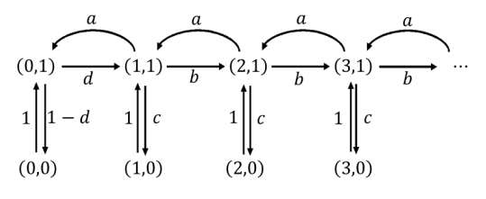

Cadenas embebidas#
En este capítulo se define una relación importante entre las cadenas de Markov en tiempo continuo y aquellas en tiempo discreto. En particular, se detalla la manera en la cual es posible obtener de una cadena de Markov en tiempo continuo, cadenas en tiempo discreto embebidas, en inglés embedded. Se presentan algunos ejemplos y se explican las correspondencias que existen entre las versiones continuas y discretas de los modelos.
Introducción#
Cuando se quiere modelar la evolución de un sistema con un proceso estocástico Markoviano, el primer paso del modelado es la elección del tipo de modelo.
Las cadenas de Markov pueden ser de tiempo continuo o de tiempo discreto. Las cadenas en tiempo continuo modelan cambios de estado del sistema que se pueden dar en cualquier momento en el tiempo, es decir que proporcionan un modelo capaz de capturar la dinámica completa del sistema en el tiempo. Por otra parte, los modelos en tiempo discreto únicamente contemplan la posibilidad de cambio de estado en una secuencia elegida de puntos en el tiempo. Por ende, es posible que los modelos en tiempo discreto no observen todos los cambios de estado.
Para determinar cuál debería ser el tipo de cadena de Markov a modelar, con el fin de estudiar un sistema de interés, resulta pertinente considerar los siguientes tres elementos:
La pregunta que se quiere contestar, es decir, qué es lo que se pretende medir con el modelo. Si sólo estamos interesados en revisiones periódicas del estado del sistema, probablemente no sea relevante conocer su evolución para todos los valores del tiempo.
Los datos que se tienen disponibles. Para modelar un sistema como una cadena de Markov de tiempo continuo, es necesario conocer las distribuciones de probabilidad de acuerdo con las que ocurren los eventos que llevan a cambios de estado. Además, es necesario que todas las distribuciones sean exponenciales e independientes. Por el contrario, para caracterizar una cadena de Markov en tiempo discreto, solo se necesitan probabilidades de transición entre estados.
Cuando sea posible optar por ambas posibilidades, la mejor decisión siempre es aquella que nos lleva al modelo más sencillo en términos de tamaño (estados y transiciones), ya que eso determina la complejidad de la definición y la solución del modelo mismo.
Cuando se opte por modelar con una cadena Markov en tiempo continuo \(\{ X(t),\ t \geq 0\}\), se está construyendo una representación del sistema que permite estudiar su evolución a través del tiempo, ya que, en principio, es posible conocer la distribución de probabilidad del estado del proceso para cualquier valor del índice \(t\). Esto implica que también es posible estudiar la evolución del modelo en una secuencia (finita o numerable) de puntos en el tiempo.
Definición de cadenas embebidas#
Si se define una secuencia de puntos de observación en el tiempo \(\tau_{0},\ \tau_{1},\tau_{2},\ldots\) a partir de un proceso estocástico en tiempo continuo \(\{ X(t),\ t \geq 0\}\), es posible definir el proceso estocástico en tiempo discreto \(\{ Z_{n},\ n \geq 0\}\), tal que
\(Z_{n} ≝ X(\tau_{n})\), por cada \(n \geq 0\),
ya que cualquier secuencia de momentos de observación \(\tau_{0},\ \tau_{1},\tau_{2},\ldots\), está contenida en el conjunto de índices del proceso en tiempo continuo \(\{ X(t),\ t \geq 0\}\). En este caso, se dice que el proceso estocástico \(\{ Z_{n},\ n \geq 0\}\) en tiempo discreto es un proceso embebido del proceso en tiempo continuo. Además, se puede determinar que cuando \(\{ X(t),\ t \geq 0\}\) es una cadena de Markov, \(\left\{ Z_{n},\ n \geq 0 \right\}\) también lo es. Por ejemplo, respecto a las probabilidades condicionales de ambas cadenas,
y para las probabilidades marginales,
\(P\left\lbrack X(\tau_{n}) = i \right\rbrack = P\left\lbrack Z_{n} = i \right\rbrack\).
Entre los motivos por los cuales puede ser útil la definición de cadenas embebidas, resulta pertinente el hecho de que varios aspectos de las cadenas de Markov de tiempo continuo pueden ser estudiados con mayor facilidad en cadenas discretas embebidas.
La cadena embebida - EMC#
Entre todas las infinitas cadenas embebidas que pueden ser definidas a partir de un proceso de Markov de tiempo continuo, existe una que se llama “la cadena embebida” (en inglés, the Embedded Markov Chain – EMC) del proceso en tiempo continuo. Esta cadena se obtiene agregando las tasas de las distribuciones exponenciales en probabilidades condicionales de un salto. Corresponde a seleccionar como puntos de observación discretos, todos los momentos en el tiempo inmediatamente después a aquellos en los cuales el estado de la cadena continua cambia.
Consideramos una cadena de Markov en tiempo continuo \(\{ X(t),\ t \geq 0\}\), con espacio de estados \(S\ \)y matriz de tasas de transición \(Q\), se tiene en la cadena embebida \(\{ Z_{n},\ n \geq 0\}\) que:
El espacio de estados de la EMC es igual a \(S\).
Para todo \(i,j \in S\), \(i \neq j\), la probabilidad de transición entre el estado \(i\) y el estado \(j\) se define como
\(p_{ij} = - q_{ij}/q_{ii}\) si \({q}_{ii} \neq 0\).Para todo \(i,j \in S\), \(i \neq j\), la probabilidad de transición \(p_{ij} = 0\) si \(q_{ii} = 0\).
Para todo \(i \in S\), la probabilidad de transición \(p_{ii}\) es nula si \(q_{ii} \neq 0\), y es 1 si \(q_{ii} = 0\).
El tiempo que pasa entre cada par de observaciones de la cadena de Markov no necesariamente es igual (\(\tau_{1} - \tau_{0} \neq \tau_{2} - \tau_{1} \neq \ldots \neq \tau_{n} - \tau_{n - 1}\)), al ser los momentos de observación dependientes de variables exponenciales.
La matriz \(P\) que se define según las expresiones 2, 3 y 4, debe cumplir las mismas propiedades que cualquier matriz de transición en tiempo discreto, esto es, todos sus elementos son números entre 0 y 1, y la suma de cada fila es unitaria.
Demostrar que la suma de la fila sea unitaria se puede hacer de la siguiente manera. Por cada fila \(i\), si \(q_{ii} = 0\), sigue que el único elemento no nulo de la fila de la matriz \(P\) es \(p_{ii} = 1\); si \(q_{ii} \neq 0\), entonces se tiene que la suma de los elementos de la fila \(i\) es:
Por la manera en la cual se definen las probabilidades, la EMC tiene una probabilidad de transición no nula por cada tasa de transición no nula en la cadena continua original. Dado que los espacios de estados son iguales, el diagrama de tasas de la cadena continua original y el diagrama de transición de la EMC son isomorfos, excepto por los estados absorbentes de la CMTC[1], que no tienen reciclo en la versión continua del proceso y sí lo tienen en la EMC. En efecto, la EMC es fácil de construir a partir de la inspección del diagrama de estado transición del proceso en tiempo continuo.
Por ejemplo, si consideramos el siguiente diagrama (Figura 1), asociado a una cadena de Markov en tiempo continuo \(\{ X(t),\ t \geq 0\}\),

Es posible construir su respectiva matriz de tasas de transición, recordando que los elementos de la diagonal corresponden a la suma negativa de los valores de la fila, por lo cual
A partir de ésta, es posible construir la EMC \(\{ Z_{n},\ n \geq 0\}\), siguiendo las expresiones mostradas al inicio de la sección, encontrando que
Ejemplo
Consideramos un sistema de producción donde las máquinas están sujetas a fallas. Cuando una máquina sufre una falla, un operario realiza una revisión, la cual con probabilidad \(1\) resuelve el problema y la máquina vuelve a estar operativa. La línea de producción solo tiene 1 máquina. Supongamos que los tiempos entre las fallas, los tiempos entre llegada de las piezas a procesar, los tiempos de procesamiento y los tiempos de la revisión sean todos exponenciales e independientes (\(\lambda =\) tasa de llegada, \(\mu =\) tasa de procesamiento, \(\alpha =\) tasa de falla, \(\beta =\) tasa de revisión), y construimos un proceso de Markov para estudiar el número de piezas a procesar en el sistema. También, supongamos que no llegan piezas cuando no hay máquinas operativas.
Ya que todos los tiempos siguen distribuciones exponenciales e independientes, es más sencillo modelar el sistema como una cadena de Markov de tiempo continuo. Además, si se quiere estudiar el número de piezas en el sistema, es más interesante poder conocer el estado del sistema en todo momento del tiempo.
Definimos entonces como variable de estado del proceso de Markov en tiempo continuo \(\left\{ \left( X(t),O(t) \right),\ t \geq 0 \right\}\), donde
\(X(t) ≝ \ \)Número de piezas por procesar en el sistema en el tiempo \(t,\)
\(O(t) ≝ \ \)Número de máquinas operativas en el sistema en el tiempo \(t\).
El espacio de estados \(S\) del proceso estocástico depende de los espacios de estados de las 2 componentes de la variable: la primera puede tomar cualquier valor entero no negativo, es decir, el espacio de estados de la variable \(X(t)\) es \(S_{X} = \{ 0,1,2,\ldots\}\), y el espacio de estados de la segunda componente \(O(t)\ \)es el conjunto discreto \(S_{O} = \{ 0,1\}\). Ya que en este ejemplo todas las combinaciones entre los valores de las variables son posibles, el espacio de estados del proceso \(\left\{ \left( X(t),O(t) \right),\ t \geq 0 \right\}\) es \(S = S_{X} \times S_{O}\), el producto cartesiano de los conjuntos \(S_{X}\ \) y \(S_{O}\), lo cual es definido como sigue:
Debido a que el espacio de estados \(S\) tiene un número infinito de elementos, la única manera de especificar completamente las tasas de transición entre estados es a través de una formalización matemática. Consideramos entonces un estado genérico \((x,o) \in S\), y miramos qué eventos pueden modificarlo. Por sencillez, vamos escribiendo las posibles transiciones en la siguiente tabla:
Tipo de evento |
Tasa de ocurrencia |
Nuevo estado |
Condiciones |
|---|---|---|---|
Llegada de una pieza |
\(\lambda\) |
\((x + 1,o)\) |
\(o > 0\) |
Fin del procesamiento de una pieza |
\(\mu\) |
\((x - 1,o)\) |
\(o > 0,\ x > 0\) |
Falla de una máquina |
\(\alpha\) |
\((x,o - 1)\) |
\(o > 0\) |
Revisión exitosa de una máquina |
\(\beta\) |
\((x,o + 1)\) |
\(o = 0\) |
A partir de la tabla, podemos definir la tasa de transición entre el estado \({\overrightarrow{s}}_{1} = (x_{1},o_{1})\) y el estado \({\overrightarrow{s}}_{2} = (x_{2},o_{2})\), para todo \({\overrightarrow{s}}_{1} \neq {\overrightarrow{s}}_{2}\), como sigue:
Los elementos diagonales de la matriz \(Q\) son definidos como el negativo de la suma de los demás elementos de la fila de la matriz. La siguiente figura muestra una parte del diagrama de transición de la cadena de Markov en tiempo continuo y de la matriz de tasas de transición (sin los elementos diagonales).

A partir de la cadena continua, se tiene que la EMC de este proceso de Markov en tiempo continuo tiene el mismo diagrama de transición en términos de estados y arcos, como se ilustra en la siguiente figura:

Donde las probabilidades de transición son definidas como:
Donde \(\lambda,\mu,\alpha\ y\ \beta\) son las tasas de transición que describen los cambios en la cadena continua.
Procesos Semi-Markovianos y EMC#
En un proceso semi-Markoviano la distribución de probabilidad de la variable aleatoria continua que caracteriza la permanencia en un estado \(i\) antes de saltar a un estado \(j\) es diferente de la distribución exponencial. Por tanto incumple la propiedad de no memoria. En muchos casos de estos casos, donde el proceso es no markoviano, es posible obtener cadenas embebidas que si lo son.
Ejemplo
Consideramos un sistema de producción donde la llegada de los materiales a procesar sigue un proceso de Poisson de parámetro \(\lambda\), pero los tiempos de procesamiento de las piezas siguen una distribución uniforme, en el intervalo \(\lbrack 0,M\rbrack\). Supongamos que todos los tiempos son independientes entre sí. Debido al tipo de distribución de los tiempos de procesamiento, no es posible modelarlo como una cadena de Markov de tiempo continuo. Conocer el número de piezas en el sistema no es una información suficiente para determinar la probabilidad del próximo estado, porque el tiempo de procesamiento de la pieza que está siendo procesada afecta la distribución del tiempo de servicio residual. Por ejemplo, si el sistema acaba de alcanzar el estado con 1 pieza, la distribución del tiempo de servicio es uniforme en \(\lbrack 0,M\rbrack\). Por otro lado, si todavía se está procesando la pieza, y al tiempo \(t < M\) llega otra, el proceso alcanzará el estado con dos piezas. El tiempo que ahora queda para terminar la primera pieza será distribuido en el intervalo \(\lbrack t,M\rbrack\) y no en \(\lbrack 0,M\rbrack\). Entonces, es necesario tener memoria de los tiempos de procesamiento que ya se dieron. Podríamos definir un proceso estocástico como \(\left\{ (X(t),W(t))\ t \geq 0 \right\}\), donde \(X(t)\) sea el número de piezas al tiempo \(t\), y \(W(t)\) sea el tiempo de procesamiento residual de la pieza en el sistema de producción.
Ahora sí el estado tendría toda la información necesaria para que el proceso estocástico fuese Markoviano, pero un proceso de este tipo, con una variable de estado mixta (parte discreta y parte continua) es bastante difícil de estudiar. Definimos un proceso embebido de la siguiente manera: sea \(\tau_{0},\ \tau_{1},\tau_{2},\ldots\)la secuencia de puntos de observación tales que \(\tau_{n}\) es el momento en el tiempo en el cual termina el procesamiento de la \(n\)-ésima pieza, y \(\tau_{0} = 0\). Si
\(Z_{n} ≝ (X(\tau_{n})\),\(\ W(\tau_{n}))\) por cada \(n \geq 0,\)
entonces la segunda componente siempre será nula. Si \(W(\tau_{n})\) es constante, podemos eliminarlo del estado y quedamos con el proceso embebido \(Z_{n} ≝ X(\tau_{n})\) en una sola variable. Es sencillo entender que el proceso en tiempo discreto \(\{ Z_{n},\ n \geq 0\}\) posee las propiedades de las cadenas de Markov. La única información necesaria para predecir la probabilidad de ocupar un estado en el futuro es el último estado del proceso, y la homogeneidad en el tiempo es garantizada por el hecho que en los puntos de observación siempre los eventos se dan con las mismas distribuciones condicionales.
De la misma manera, se puede verificar que si \(\{ X(t),\ t \geq 0\}\) es homogéneo en el tiempo, también lo será \(\{ Z_{n},\ n \geq 0\}\). Entonces, un proceso embebido de una cadena de Markov de tiempo continuo siempre es una cadena de Markov de tiempo discreto.
El cálculo de las probabilidades de transición en un paso de una cadena embebida puede ser laborioso, y su dificultad depende de la secuencia de puntos de observación que se eligió. Para el ejemplo que se reportó anteriormente, existe una probabilidad de transición no nula entre cada pareja de estados y un reciclo por cada estado, es decir la matriz P de las probabilidades a un paso no contiene ceros. Consideramos, por ejemplo:
Esta probabilidad es igual a la probabilidad de que solo una pieza entre al sistema y que su procesamiento termine antes de que llegue la segunda. Si denotamos con \(S_{n}\) la variable aleatoria que representa el tiempo de llegada de la \(n\)-ésima pieza de acuerdo con el proceso de Poisson, y con \(U\sim Unif\lbrack 0,M\rbrack\) la variable aleatoria continua que representa el tiempo de procesamiento de la pieza, podemos reescribir la probabilidad de arriba como sigue:
Dado que por cada \(n\), \(S_{n}\) es la suma de \(n\) variables aleatorias independientes y con la misma distribución exponencial, \(S_{n + 2} - \ S_{n + 1}\) es una variable aleatoria exponencial, por lo cual la probabilidad expresada arriba es igual a la probabilidad de que una variable exponencial de parámetro \(\lambda\) sea mayor que una variable aleatoria uniforme en \(\lbrack 0,M\rbrack\).